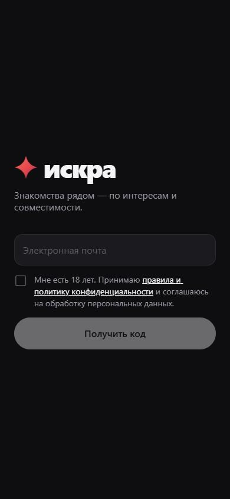
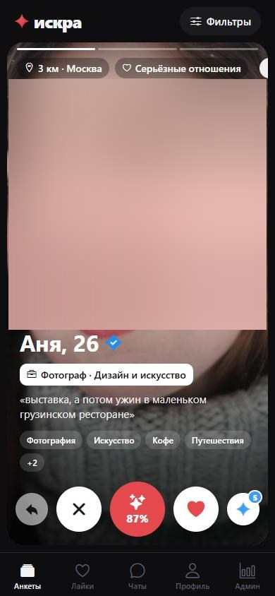
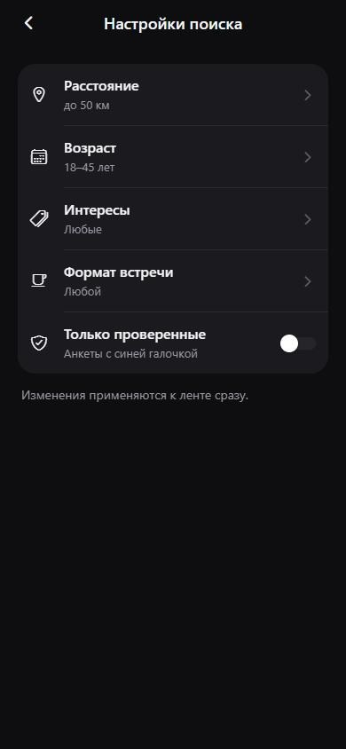
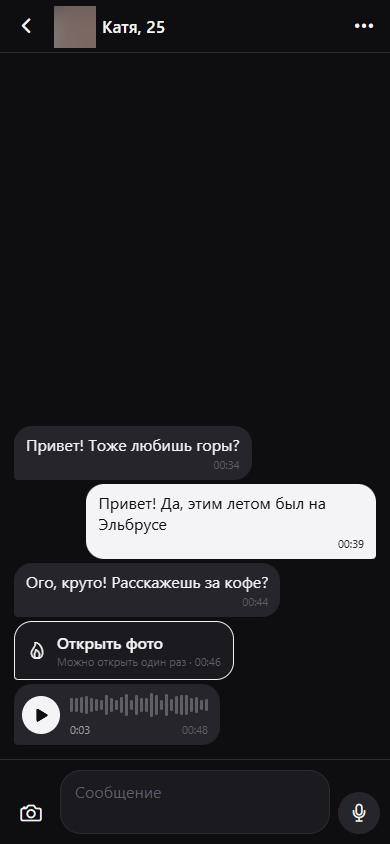
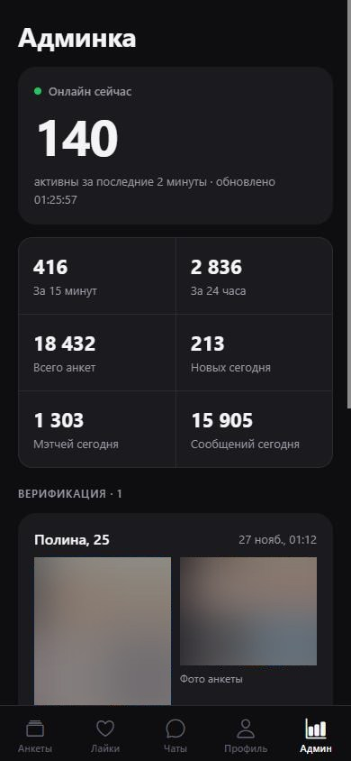

Знакомства рядом по интересам и совместимости. Одна кодовая база для Android (RuStore) и iOS (App Store), собственный сервер в России.





Скриншоты сделаны в демо-режиме на тестовых данных; фото в анкетах скрыты.